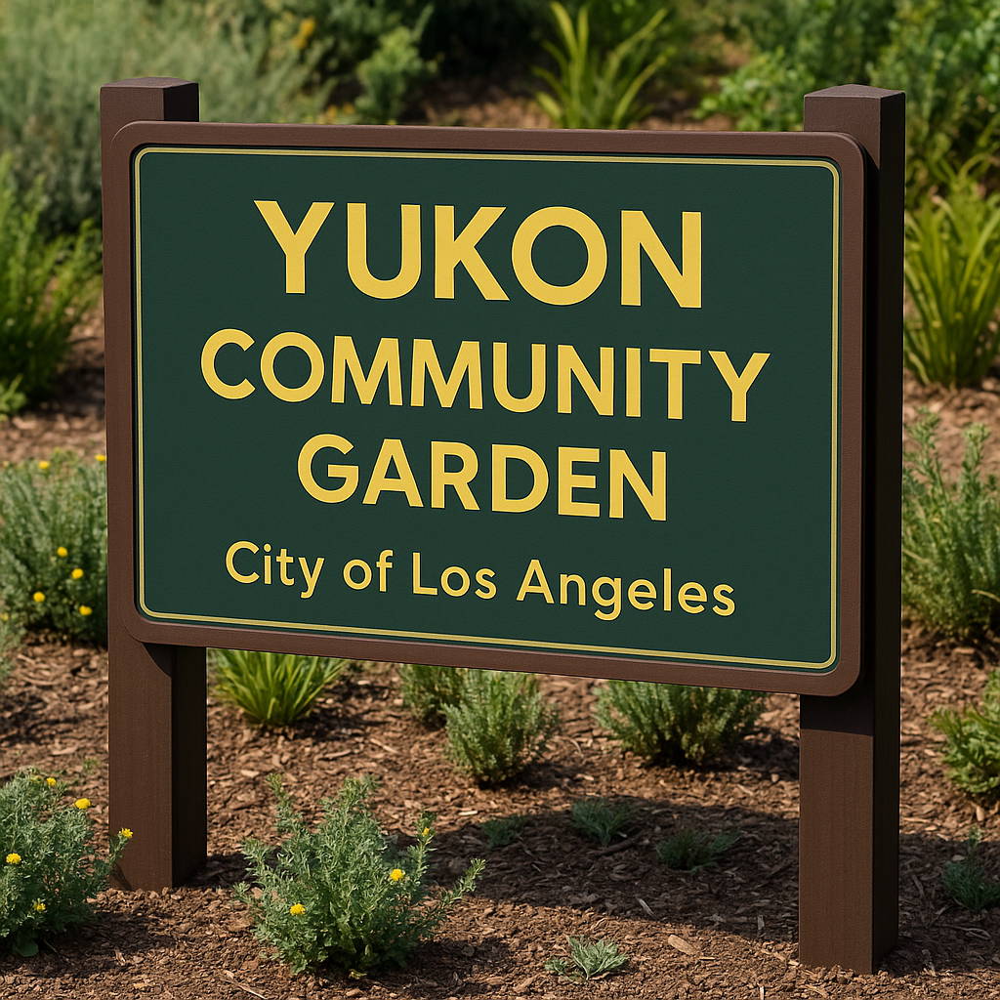

Photogrammetry
Blender
GLB
Web Viewer
REACH (Headset Preview)
Project Summary
Reclamation is a city-wide initiative that combines immersive technology, community
storytelling,
workforce development, and environmental action to transform neglected spaces into vibrant, healthy, and
equitable places.
This prototype explores a community-garden intervention: residents can virtually design a re-greening plan in
a
digital twin, then carry those decisions into physical implementation.
What You’re Looking At
- Digital twin (GLB) of a neighborhood site, viewable on web.
- Garden-only layout intent: beds + paths + gathering space confined to the lot boundary.
- Signage concept designed to be fabricated as a 3D asset for the space.
Toolchain
- Capture: Photogrammetry (site imagery → reconstruction)
- Cleanup + Optimization: Blender (retopo/cleanup, scale, materials, export)
- Delivery: Web (model-viewer) + REACH headset preview (in progress)
Goal: keep it accessible on web, then add immersive headset walkthrough once REACH preview is
finalized.
Prototyping Flow
1. Site DiscoveryFind + document
Identify an underused lot and document constraints (lot boundary, access, circulation, safety,
neighboring homes/road).
2. Photogrammetry CaptureReality → mesh
Capture the space and reconstruct an initial 3D mesh to preserve real-world scale and context.
3 Blender CleanupOptimize
Clean geometry, correct scale/orientation, optimize materials and export as a performant GLB for web +
headset.
4. Garden Program in the TwinDesign inside boundary
Block out garden elements inside the lot only (beds, paths, seating), leaving roads untouched and
realistic.
5. REACH Headset PreviewIn progress
Build an immersive walkthrough so residents can experience the plan spatially before real-world buildout.
6. Community SessionFeedback loop
Use workshops to gather resident input, revise the layout, and prepare a build-ready plan and signage
assets.
Concept Images

Garden layout mockup (beds + paths + gathering node), confined to the lot boundary.

LA parks-style sign concept intended for Blender → 3D fabrication/placement.
Next Steps
- Finish REACH headset preview and publish a shareable link.
- Add “story node” locations (AR portals) tied to resident narratives.
- Finalize signage + wayfinding as 3D assets and place them in-scene.
- Run a community co-design session and iterate toward build-ready drawings.